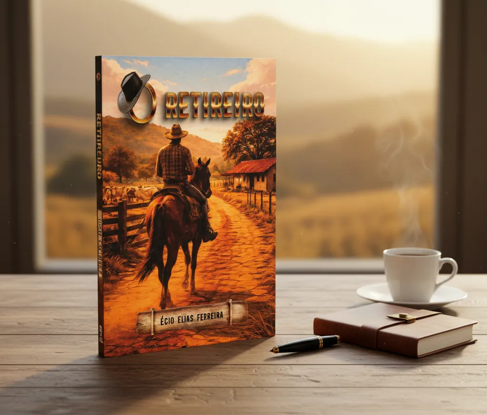

O Retireiro
Um romance brasileiro que celebra o amor, a tradição e as raízes do interior.
Sobre o livro
O Retireiro é um romance ambientado na Serra da Canastra, onde amor e tradição se entrelaçam em uma narrativa envolvente, humana e profundamente brasileira. A obra convida o leitor a caminhar pelas paisagens do interior, explorando sentimentos, escolhas e a força das raízes culturais.

Romance
Emoção, afetos e conflitos humanos
Brasil profundo
Serra da Canastra como cenário vivo
Tradição
Costumes, valores e identidade